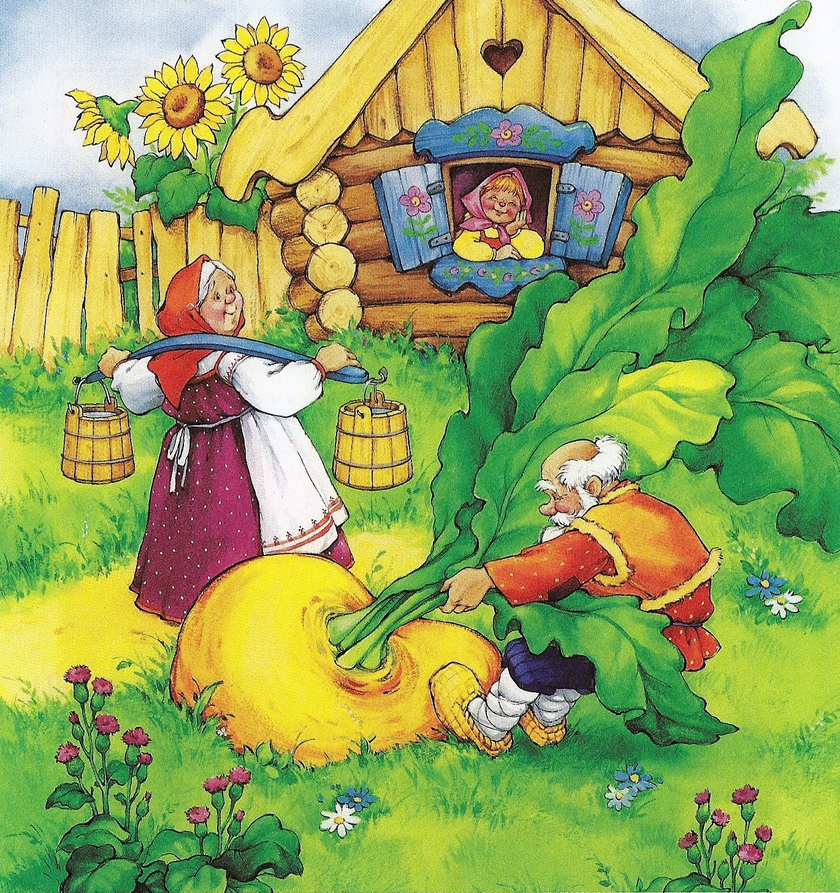

The Enormous Turnip
Ukrainian folktale

An old man planted a turnip 🌱
The turnip grew and grew…
It was enormous!
The old man started to pull the turnip out of the ground.
He pulled and pulled, but could not pull it out.
So he called over his wife 👵🏻.
The old woman took hold of the old man, and the old man took hold of the turnip.
They pulled and pulled, but could not pull it out.
So the old woman called over the granddaughter 👧🏻.
The granddaughter took hold of the old woman, the old woman took hold of the old man,
the old man took hold of the turnip.
They pulled and pulled, but could not pull it out.
So the granddaughter called over the dog 🐕.
The dog took hold of the granddaughter, the granddaughter took hold of the old woman,
the old woman took hold of the old man, and the old man took hold of the turnip.
They pulled and pulled, but could not pull it out.
So the dog called over the cat 🐈⬛.
The cat took hold of the dog, the dog took hold of the granddaughter, the granddaughter took hold of the old woman,
the old woman took hold of the old man, and the old man took hold of the turnip.
They pulled and pulled, but could not pull it out.
So the cat called over the mouse 🐭.
The mouse took hold of the cat, the cat took hold of the dog,
the dog took hold of the granddaughter, the granddaughter took hold of the old woman,
the old woman took hold of the old man, and the old man took hold of the turnip.
They pulled and pulled …
and finally out came the enormous turnip 🌱!